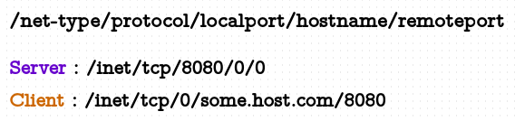
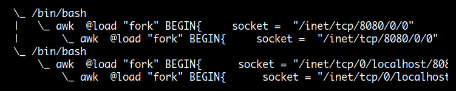

TCP/IP Internetworking
bash shell 에서 특정 주소 형식을 이용해 socket 연결 기능을 제공하는 것처럼 awk 에서도 아래와 같은 주소 형식의 스트링을 사용하면 자동으로 socket 연결로 인식합니다. 서버쪽 주소는 localport 를 알맞은 값으로 적어주면 되고 hostname 과 remoteport 는 0 으로 두면 됩니다. 클라이언트 주소는 localport 를 0 으로 두고 연결할 hostname 과 remoteport 를 알맞게 설정하면 됩니다. hostname 은 ip 주소로도 사용할 수 있습니다.

- net-type : /inet4/ 는 IPv4, /inet6/ 는 IPv6, /inet/ 는 system default
- protocol : tcp 또는 udp
송신만 하거나 수신만 하는 단방향일 경우는 redirection ( <, > ) 을 사용할 수 있지만
양방향 통신일 경우는 coprocess ( |& ) 를 사용해야 합니다.
파이프로 두 개의 외부 명령을 직접 연결해 사용할 수 없듯이
socket 도 직접 외부 명령을 연결해 사용할 수 없습니다.
$ awk -b 'BEGIN{
"cat file1" |& "/inet/tcp/0/some.host.com/8080"
}'
awk: cmd. line:2: "cat file1" |& "/inet/tcp/0/some.host.com/8080"
awk: cmd. line:2: ^ syntax error
임시 웹 서버
디렉토리에 webserver.awk 와 cat.jpg
파일을 복사한 후 awk -f webserver.awk 로 실행하면 됩니다.
{kind=link}
각 리소스 ( html, image ) 별로 download 를 위해 tcp 연결을 맺고 끊는 http/1.0 방식입니다.
@load "filefuncs"
@load "readfile"
BEGIN {
RS = ORS = "\r\n"
datefmt = "Date: %a, %d %b %Y %H:%M:%S %Z"
socket = "/inet/tcp/8080/0/0"
while (socket |& getline > 0) {
if ( $1 == "GET" ) {
print "GET : ", $2
$2 = substr($2,2)
switch ($2) {
case /\.(jpg|gif|png)$/ :
sendImage($2)
break
default :
sendHtml()
}
}
}
}
function sendHtml( a, arr) {
arr["type"] = "text/html"
arr["content"] = "\
<HTML>\n\
<HEAD><TITLE>Out Of Service</TITLE></HEAD>\n\
<BODY>\n\
<H1>This site is temporarily out of service.</H1>\n\
<P><img src=cat.jpg></P>\n\
</BODY>\n\
</HTML>\n\
"
arr["length"] = length(arr["content"])
arr["date"] = strftime(datefmt, systime(), 1)
send(arr)
}
function sendImage(file, cmd, a, arr, type) {
RS="\n"
cmd = "file -b --mime-type '" file "'"
cmd | getline type; close(cmd)
RS="\r\n"
arr["type"] = type
stat(file, a)
arr["length"] = a["size"]
arr["content"] = readfile(file)
arr["date"] = strftime(datefmt, systime(), 1)
send(arr)
}
function send(arr) {
print "HTTP/1.0 200 OK" |& socket
print arr["date"] |& socket
print "Server: AWK" |& socket
print "Content-Length: " arr["length"] |& socket
print "Content-Type: " arr["type"] |& socket
print "" |& socket
print arr["content"] |& socket
print "close socket"
close(socket)
}
양방향 채팅
위에서 작성한 웹 서버의 경우는 메시지가 전송되는 순서가 request, response 로 일정하기 때문에 하나의 프로세스로도 처리할 수가 있었는데요. 양방향 채팅의 경우는 일정한 순서 없이 임의로 전달되기 때문에 입력과 출력을 따로 처리해줘야 되므로 두 개의 프로세스가 필요합니다.
fork 하기 전에 server 의 socket |& getline 와 client 의 print "" |& socket 로
먼저 socket 을 연결하는 것은 child 와 parent 프로세스가 동일한 socket 을 사용하기 위해서입니다.
상대방이 종료하게 되면 socket 에 연결 중인 parent 프로세스만 종료되고
child 프로세스는 남게 되므로 종료전에 먼저 kill 외부 명령으로 child pid 를 종료시킵니다.
한가지 주의할 것은 heredoc 으로 작성하면 안되고 quotes 이나 파일로 만들어서 실행해야 됩니다.

############ 먼저 server 를 실행 ############
$ awk '
@load "fork"
BEGIN{
socket = "/inet/tcp/8080/0/0"
socket |& getline
if (( pid = fork() ) == 0 ) {
while (getline msg < "/dev/stdin" > 0) # child
print msg |& socket
} else {
while (socket |& getline msg > 0) # parent
print msg
system("kill " pid)
}
}'
############## chat client ##############
$ awk '
@load "fork"
BEGIN{
socket = "/inet/tcp/0/some.host.com/8080" # localhost or 0.0.0.0
print "" |& socket
if (( pid = fork() ) == 0 ) {
while (getline msg < "/dev/stdin" > 0) # child
print msg |& socket
} else {
while (socket |& getline msg > 0) # parent
print msg
system("kill " pid)
}
}'
바이너리 파일 전송
awk 는 기본적으로 텍스트 데이터를 다루는 프로그램이지만
약간 다른 방식으로 활용을 하여 바이너리 파일 전송을 구현한 것입니다.
이때는 입출력 데이터를 byte 로 다루는 -b 옵션을 사용해야 하고
RS 설정과 RT 변수를 활용합니다.
테스트에 사용한 gawk 버전이 4.1.4 인데 구버전의 경우 정상적으로 작동하지 않을 수 있습니다.
RS=".{1,3}" 형식을 이용하여 일정한 크기로 데이터 읽어들이기 예제
$ echo -n 0123456789 |
awk '{ printf "NR:%s, NF:%s, $0:(%s), RT:(%s)\n", NR, NF, $0, RT }' RS='.{1,3}'
NR:1, NF:0, $0:(), RT:(012)
NR:2, NF:0, $0:(), RT:(345)
NR:3, NF:0, $0:(), RT:(678)
NR:4, NF:0, $0:(), RT:(9)
바이너리 파일 전송
################# file receiver #################
$ awk -b -f - <<\EOF
BEGIN{ RS=".{1,300}"
while ( getline < "/inet/tcp/8080/0/0" > 0 ) {
printf "%s", RT > "file1.jpg.copy"
sum += length(RT)
printf "\r%'d bytes received", sum
}
print ""
}
EOF
1,637,568 bytes received
################## file sender ###################
$ awk -b -f - <<\EOF
BEGIN{ RS=".{1,300}"
while ( getline < "file1.jpg" > 0 ) {
printf "%s", RT > "/inet/tcp/0/some.host.com/8080"
sum += length(RT)
printf "\r%'d bytes sent", sum
}
print ""
}
EOF
1,637,568 bytes sent
tar 파일 전송
############### tar receiver ################
$ awk -b 'BEGIN{ RS=".{1,300}"
while ( getline < "/inet/tcp/8080/0/0" > 0 ) {
printf "%s", RT | "tar xvz"
}
}'
############### tar sender ##################
$ awk -b 'BEGIN{ RS=".{1,300}"
while ( "tar cvz ./mydir" | getline ) {
printf "%s", RT > "/inet/tcp/0/some.host.com/8080"
}
}'